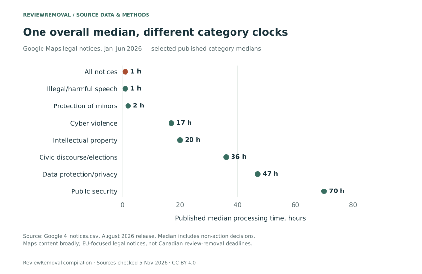
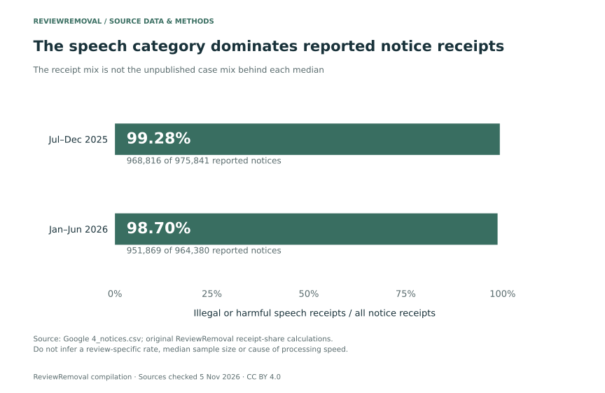
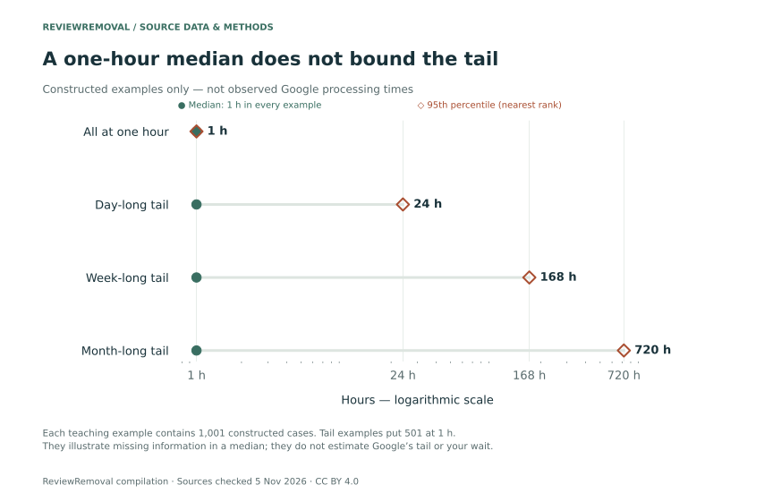

Published by ReviewRemoval. Authorship, sources and correction standards.
On this page
Google’s January–June 2026 Maps legal-notice report lists an overall one-hour median. That figure describes a particular processing measure, including decisions not to act. It is not a Canadian Google review removal deadline. Our new compilation checks the source cells and separates the statistic from the promise a business might mistakenly hear. February 2026 Google Maps report (ZIP) · August 2026 Google Maps report (ZIP).
How long does Google review removal take?
There is no single completion time established by this dataset. For the ordinary Business Profile reporting route, Google’s current merchant guidance says evaluation usually takes several days. A legal-notice processing median, an appeal median and the time until a particular review disappears are different measurements.
The important operational question is which stage a time figure covers. Preparing the evidence, submitting a report, receiving a decision, pursuing an eligible appeal and confirming public visibility do not share one clock. A decision can also leave the review online.
- A new compilation of 2,800 source cells from two official notice reports, preserving 251 published numbers and 2,549 missing fields.
- Three original graphs: category medians, receipt composition and separately constructed examples of what a median cannot reveal.
- Open CSV/JSON data, source-row locations, exact archive fingerprints and an independent check against both CSV and XLSX.
- A practical distinction between a same-day case start, platform processing and a verified removal.
The source clock includes decisions not to act
The table heading is “Median time to take action.” Google’s accompanying methodology clarifies that its calculation also includes notices where no action was taken. The general notes specify hours as the timing unit. We therefore describe it as a processing median rather than a successful-removal duration. See 11_qualitative.csv, rows 14 and 18, in each official archive.
For July–December 2025, the reported overall median is zero hours. For January–June 2026, it is one hour. Google notes that an overall zero can occur where a large share of notices is processed automatically. A printed zero does not disclose an exact decision duration or a rounding rule. Nor does a zero-to-one change yield a meaningful percentage slowdown from a zero baseline.
| Activity period | Notice receipts | Items in notices | Reported median |
|---|---|---|---|
| Jul–Dec 2025 | 975,841 | 1,315,323 | 0 h |
| Jan–Jun 2026 | 964,380 | 1,338,970 | 1 h |
Scroll sideways to see every column.
These are EU-focused Google Maps disclosures covering relevant content across the service, rather than reviews alone. They do not identify Canadian merchants, ReviewRemoval clients or a sample of ordinary Business Profile policy reports. The European Commission’s transparency-reporting overview explains the machine-readable report framework.
The overall median hides different category clocks
In H1 2026, the source lists one hour for illegal or harmful speech, 20 hours for intellectual property, 47 hours for data protection/privacy and 70 hours for public security. These category medians sit beside the one-hour overall value. A small category cannot be assigned the overall median simply because it belongs to the same report.



| Period | Category | Notice receipts | Published median |
|---|---|---|---|
| 2025 H2 | Consumer information | 5 | 667 h |
| 2025 H2 | Data protection and privacy | 4,308 | 81 h |
| 2025 H2 | Illegal or harmful speech | 968,816 | 0 h |
| 2025 H2 | Intellectual property | 823 | 18 h |
| 2025 H2 | Civic discourse or elections | 1 | 934 h |
| 2025 H2 | Protection of minors | 1,887 | 4 h |
| 2025 H2 | Scams and fraud | 1 | 382 h |
| 2026 H1 | Consumer information | 7 | 47 h |
| 2026 H1 | Cyber violence | 1 | 17 h |
| 2026 H1 | Data protection and privacy | 5,522 | 47 h |
| 2026 H1 | Illegal or harmful speech | 951,869 | 1 h |
| 2026 H1 | Intellectual property | 1,574 | 20 h |
| 2026 H1 | Civic discourse or elections | 47 | 36 h |
| 2026 H1 | Protection of minors | 5,354 | 2 h |
| 2026 H1 | Public security | 3 | 70 h |
| 2026 H1 | Scams and fraud | 2 | 2 h |
| 2026 H1 | Not specified | 1 | 1 h |
Scroll sideways to see every column.
Small receipt counts deserve particular care. The H1 2026 public-security category reports three notices, while consumer information reports seven. A published category median does not reveal how many completed timing observations produced it. Receipt counts provide context; they are not an independently verified denominator for the timing statistic.
For the earlier period, some small categories have far larger printed medians: consumer information is 667 hours and civic discourse/elections is 934 hours. The latter has one reported notice receipt. We publish those values faithfully without turning them into a general forecast or claiming that the receipt and processed-case cohorts are identical.
Receipt composition: what the new calculations show
The illegal-or-harmful-speech category accounts for 951,869 of 964,380 H1 2026 notice receipts: 98.70%. We calculate that descriptive share directly from the category and total rows. The earlier period’s corresponding share is 99.28%.



The overall median and this category’s median happen to match in each period: zero hours in H2 2025 and one hour in H1 2026. That is an observed relationship between printed summaries, not proof that category mix caused the overall timing result. Processed-case mix, aggregation and the unreported distribution also matter.
Our 32-row summary retains the total and fifteen parent-category rows for each period. The sum of the published parent receipt values equals the reported total in both files. That arithmetic check is not permission to add the total to its categories, or to add parent categories to their subcategories. Those reporting levels overlap.
A one-hour median can coexist with a long tail
A median identifies a central rank in ordered data. It does not specify the maximum, the mean or a late-case percentile. The NIST statistical handbook defines the median separately from the arithmetic mean and discusses their different responses to extreme values.
To make the missing information visible, we constructed four teaching examples with 1,001 cases each. In the first, every case takes one hour. In the other three, 501 cases take one hour and 500 take, respectively, 24, 168 or 720 hours. Every example has the same one-hour median.



| Constructed example | Cases | Median | 95th percentile* |
|---|---|---|---|
| All at one hour | 1,001 | 1 h | 1 h |
| Day-long tail | 1,001 | 1 h | 24 h |
| Week-long tail | 1,001 | 1 h | 168 h |
| Month-long tail | 1,001 | 1 h | 720 h |
Scroll sideways to see every column.
*Nearest-rank definition: sort the 1,001 constructed durations and select rank ceil(0.95 × 1,001). The downloadable example table also includes each constructed mean and the proportion assigned to the slower group.
This does not mean nearly half of real Google cases take a month. It means a median alone cannot tell us whether such a tail exists. Nor can published category medians be averaged into an overall median without the underlying distributions. Giving a more precise deadline requires additional evidence, not another decimal place.
Notices, items and successful removals are different units
The latest total includes 964,380 notice receipts and 1,338,970 items in those notices. One notice can contain multiple items. Google’s contextual notes also say incomplete or incorrect notices can have zero recorded items. Neither unit is a count of unique businesses, and an item is not necessarily a written review.
We keep legal notices separate from internal complaints. Our Google Maps appeal-direction audit studies a later reporting mechanism. Comparing its median with this report’s one-hour value does not measure the extra time that a matched review-removal case spent on appeal.
The cell audit also preserves two kinds of missing field. H2 2025 contains explicit empty fields; the later CSV omits many trailing fields entirely. Both become null values in the release, with their source-presence status retained. A blank median is not an instantaneous case, and a missing action count is not a measured zero.
A usable timeline for Canadian business owners
A business in Toronto, Mississauga, Ottawa, Montréal, Vancouver, Calgary or Edmonton needs a status it can act on. The report does not provide city-specific processing times, so none should be inferred from its overall median. Use a case log that keeps these events distinct:
- Evidence ready. Keep the public review link, relevant policy concern and factual supporting material organised. Initial case preparation needs no Google password.
- Report submitted. Record when the report was sent and its reference. Submission is not a removal confirmation.
- Decision received. Keep the actual status and email. A decision that finds no violation is still a completed decision, with the review remaining online.
- Eligible appeal submitted. Use the available appeal route and retain its separate reference. Current Google guidance describes a one-time merchant appeal where eligible.
- Visibility checked. Confirm the identified review’s status and keep a later check separate from the decision timestamp.
Google’s reporting/status guidance distinguishes a pending decision, a report reviewed without a policy violation and an escalated appeal. Those labels are more useful for an active case than treating an EU median as a timer. Our case-tracking template and evidence checklist can help organise the next step.
ReviewRemoval starts work on your case the same day you order. That refers to our case work; Google’s evaluation and removal decision follow its own process. Sending a free assessment request takes no payment. We confirm the scope and fees before paid work.
Methods, provenance and limitations
This is an original secondary compilation and descriptive audit, version 1.0.0. We retrieved the Maps-specific ZIP releases published February 27 and August 28, 2026, and checked their activity periods against each identification file. The release covers July–December 2025 and January–June 2026. Raw archives are retained privately for verification and linked publicly, rather than republished.
For each period, the builder reads 140 data rows and ten numeric indicator positions from 4_notices.csv, producing 2,800 source-cell records. There are 251 published numeric cells, 1,291 explicit empty fields and 1,258 omitted trailing fields. Every record carries the period, hierarchy level, metric, unit and original row/column location. Numeric zero remains numeric zero; missing fields remain null.
A separate auditor checks every value against both the CSV and the companion XLSX without importing the builder. It verifies archive/member SHA-256 fingerprints, 32 category/total summaries, two receipt-composition calculations, and the four separately constructed median examples. CSV, JSON and CSVW definitions are checked for agreement. Graphs read the release file directly.
Google’s notes warn that period comparisons can reflect service or reporting changes. Reported receipts and period outcomes do not necessarily represent the same cases. No individual durations, timing sample sizes, removal-only medians or percentile distributions are supplied here. This audit cannot estimate the probability that a Canadian report will succeed or identify an exact wait for a particular business.
Trujillo, Tessa and Cresci’s 2026 preprint on harmonised DSA reporting provides methodological context on comparability and completeness. It is not independent validation of this compilation, and we do not represent the preprint as peer reviewed.
Commercial interest: ReviewRemoval provides paid review-reporting assistance. This publication contains no client performance results, new case-level review observations, causal effect, independently peer-reviewed finding or search-ranking experiment. The original contribution is the attributed compilation, new descriptive calculations, source-format audit and constructed statistical illustrations. See our authorship and correction standards.
Questions about Google review removal timing
Does Google remove reviews in one hour?
This dataset does not establish that. The one-hour figure is an overall processing median for the defined EU-focused Maps legal-notice measure, including decisions not to act. It is not a removal-only median or an individual deadline.
Does a zero-hour median mean instant review removal?
No. Google notes that automated processing can contribute to an overall zero. The published number does not disclose an exact duration or show that every notice resulted in removal.
Can a removal service guarantee a 24-hour result?
These reports cannot support such a guarantee. The service’s preparation and follow-up work must be distinguished from Google’s moderation decision and timing.
Is there a Canadian average in your data?
No. The figures are EU-focused Google Maps legal-notice disclosures. We did not collect a Canadian outcome cohort, and a median is not an arithmetic average.
What should I do while my report is pending?
Keep its reference, check the status in Google’s Reviews Management Tool and preserve relevant evidence. Use the available next step when a decision arrives. Reporting repeatedly is not evidence that a case will move faster.
Open dataset, charts and citation
- 2,800 attributed source cells, with explicit and omitted missing fields · CSVW field definitions.
- 32 total/category rows with published medians and receipt shares · CSVW field definitions.
- Two period summaries with receipt-composition calculations · CSVW field definitions.
- Four constructed median examples, not observed Google cases · CSVW field definitions.
- Complete release, source fingerprints and limitations.
- Reproduction builder · Independent CSV/XLSX audit · Chart script.
- BibTeX · Citation File Format.
From blog/data, run python build-google-notice-timing.py, python audit-google-notice-timing.py --fetch and python plot-google-notice-timing.py. Data compilation and auditing use the Python standard library; plotting requires Matplotlib. The compilation and our original figures are CC BY 4.0; source publishers retain rights in their material.
ReviewRemoval. (2026, November 5). Google Maps notice timing: source-cell audit and median-composition analysis (Version 1.0.0). Article and open dataset. Attribute the underlying notices and medians to Google; label the four teaching examples as constructed.
Sources and exact locations
- Google Maps DSA report, published 2026-02-27 (ZIP). Indicators:
4_notices.csv, rows 2–141 and numeric columns F–O. Definitions and scope:11_qualitative.csv, rows 14 and 18. Period/publication details:1_report_identification.csv. Every numeric position was checked against the corresponding XLSX worksheet. - Google Maps DSA report, published 2026-08-28 (ZIP). Indicators:
4_notices.csv, rows 2–141 and numeric columns F–O. Definitions and scope:11_qualitative.csv, rows 14 and 18. Period/publication details:1_report_identification.csv. Every numeric position was checked against the corresponding XLSX worksheet. - Google Business Profile: Report inappropriate reviews. Merchant reporting, review-evaluation guidance and status/appeal routes; checked November 5, 2026.
- European Commission: How the Digital Services Act enhances transparency online. Reporting framework and harmonised templates; checked November 5, 2026.
- NIST/SEMATECH e-Handbook of Statistical Methods: Measures of Location. Median and mean definitions; statistical context rather than Google-specific validation.
- Trujillo, A., Tessa, B., and Cresci, S. (2026), Disarranged Harmonization of Transparency Reporting by Social Media Platforms Under the Digital Services Act. arXiv:2605.17655v1, submitted May 17, 2026. Preprint; reporting-quality context.
Need help with a specific review?
Send the platform and the review link. We’ll assess the details and explain the price before paid work begins.
Request a Google review assessment